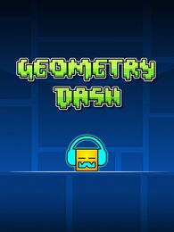
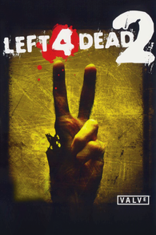
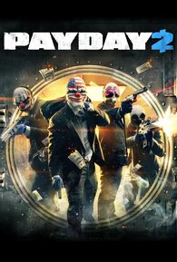

Geometry Dash
Descripción:Un juego de plataformas que pone a prueba tus reflejos y coordinación con música electrónica de fondo. El jugador controla una figura geométrica que debe saltar obstáculos con precisión milimétrica, todo al ritmo de melodías intensas. Aunque su estilo gráfico es sencillo, su dificultad es legendaria. Es ideal para quienes disfrutan de los desafíos rápidos y repetitivos que mejoran con práctica.
Reseña:Tal vez no sea el mejor juego ritmico, pero lo recomiendo especialmente por su editor y niveles online. corre en casi todos lo ordenadores y no es tan caro, por ultimo, que sea tan modeable es increible
Más información.Left 4 Dead 2
Descripción:Un videojuego cooperativo de acción y terror donde los jugadores se enfrentan a hordas de zombis en distintos escenarios apocalípticos. Cada partida es diferente gracias a su sistema dinámico de dificultad y enemigos. El juego fomenta el trabajo en equipo y la estrategia, con una ambientación oscura y momentos llenos de adrenalina. Perfecto para jugar con amigos y sobrevivir juntos a cada emboscada.
Reseña:juegazo, la causa por la cual tengo steam, 10/10 en cada uno de sus aspectos, buena historia, campañas, personajes, infectados, por si fuera poco tienen su propia banda musical y comic, simplemente un clasico de clasicos.
Más información.Pay Day 2
Descripción:En este juego multijugador encarnas a un ladrón profesional que participa en atracos a bancos, robos de arte y más. Puedes planear el golpe con sigilo o enfrentarte a intensos tiroteos con la policía. A medida que avanzas, mejoras tu equipo y habilidades, haciendo tus misiones más complejas. Su estilo cooperativo y su libertad para decidir cómo completar los objetivos lo hacen muy adictivo.
Reseña:Extremadamente divertido y variado, buen gameplay y BSO, la historia no se cuenta de manera convencional pero muy buena también. Te dará infinitas horas de diversión.
Más información.